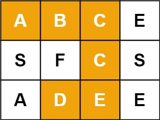
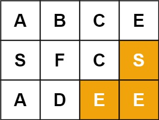
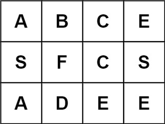

题面
给定一个 m x n 二维字符网格 board 和一个字符串单词 word 。如果 word 存在于网格中，返回 true ；否则，返回 false 。
单词必须按照字母顺序，通过相邻的单元格内的字母构成，其中"相邻"单元格是那些水平相邻或垂直相邻的单元格。同一个单元格内的字母不允许被重复使用。
示例 1：

输入： board = [['A','B','C','E'],['S','F','C','S'],['A','D','E','E']], word = "ABCCED"
输出： true示例 2：

输入： board = [['A','B','C','E'],['S','F','C','S'],['A','D','E','E']], word = "SEE"
输出： true示例 3：

输入： board = [['A','B','C','E'],['S','F','C','S'],['A','D','E','E']], word = "ABCB"
输出： false提示：
m == board.lengthn = board[i].length1 <= m, n <= 61 <= word.length <= 15board和word仅由大小写英文字母组成
思路
- 本质是岛屿数量（第 51 题）+ 回溯的结合：在网格上 DFS，但走不通要撤销标记
和岛屿数量的对比
# 岛屿数量（第 51 题）
def dfs(i, j):
if i < 0 or i >= m or j < 0 or j >= n or grid[i][j] == '0':
return
grid[i][j] = '0' # 标记，永久不撤销（淹了就不管）
dfs(i - 1, j)
dfs(i + 1, j)
dfs(i, j - 1)
dfs(i, j + 1)
for i in range(m): # 每个格子都试
for j in range(n):
if grid[i][j] == '1':
self.ans += 1
dfs(i, j)
# 单词搜索（本题）
def dfs(i, j, k):
if i < 0 or i >= m or j < 0 or j >= n or board[i][j] != word[k]:
return False
if k == len(word) - 1:
return True
board[i][j] = '#' # 标记（防止走回头路）
res = (dfs(i-1,j,k+1) or dfs(i+1,j,k+1) or
dfs(i,j+1,k+1) or dfs(i,j-1,k+1))
board[i][j] = word[k] # 回溯！撤销标记
return res
for i in range(m): # 每个格子都试
for j in range(n):
if dfs(i, j, 0):
return True
return False岛屿数量（第 51 题） | 单词搜索（本题） | |
|---|---|---|
标记已访问 |
|
|
需要回溯？ | 不需要（淹了就不管） | 需要（其他路径可能用到这个格子） |
返回值 | 无（void） | True / False |
终止条件 | 越界或遇到 | 越界或字符不匹配 |
外层遍历 | 找 | 每个格子都试做起点 |
为什么要标记 '#'
防止走回头路。同一个格子在一条路径上不能重复使用——和全排列里 if i in path: continue 是同一个目的。
为什么要回溯 撤销标记
这条路走不通，不代表这个格子没用——换个方向经过它可能就通了。撤销标记，让其他路径有机会重新使用它。
节点视角的理解
我是一个节点，我匹配了 word[k]，但整个单词还没搜完。我需要问上下左右的邻居："你们谁能帮我把 word[k+1:] 剩下的部分找到？"邻居又会递归问邻居的邻居，直到最后一个字符匹配（k == len(word) - 1），才层层返回 True。
代码实现
class Solution:
def exist(self, board: List[List[str]], word: str) -> bool:
m = len(board)
n = len(board[0])
def dfs(i, j, k):
if i < 0 or i >= m or j < 0 or j >= n or board[i][j] != word[k]:
return False
if k == len(word) - 1:
return True
board[i][j] = '#'
res = dfs(i-1,j,k+1) or dfs(i+1,j,k+1) or dfs(i,j-1,k+1) or dfs(i,j+1,k+1)
board[i][j] = word[k]
return res
for i in range(m):
for j in range(n):
if dfs(i, j, 0):
return True
return False- 易错点：
- 外层必须双重 for 循环遍历每个格子：单词不一定从
(0,0)开始，每个格子都可能是起点 - `board[i][j] = word[k]` 回溯：不撤销的话，其他路径经过这个格子时会发现是
'#'而错过正确答案 - `k == len(word) - 1` 是终止条件：匹配到当前字符不够，必须整个单词都匹配完才返回 True
- 用 `or` 连接四个方向：只要有一个方向走得通就行，不需要全部成功
- 复杂度：时间 O(m × n × 3^L)（L 为 word 长度，每步最多 3 个方向——来的方向不会走），空间 O(L)（递归深度）